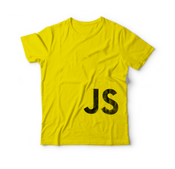

Actividad. Intervalos de monotonía
\( \text{El propósito de este ejercicio es que puedas identificar los intervalos donde la función es decreciente.} \)
Mueve los deslizadores de tal modo que indiques los trozos de la gráfica donde la función es estrictamente decreciente.
Intervalos de monotonía
Pregunta 1
Pregunta 2
Pregunta 3
Pregunta 4
Teorema del valor medio